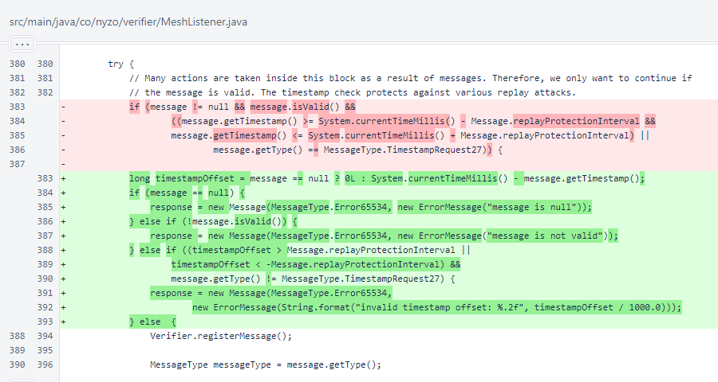
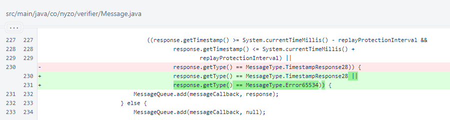

Nyzo version 578 (commit on GitHub) adds error responses for incoming messages that are null or have invalid timestamps or signatures.
The version affects all run modes that use Nyzo messages. This is an inconsequential update that is designed to improve error reporting and diagnosis of communication failures.
In MeshListener, the effective checks on message validity are unchanged. Messages still only go through normal processing if they are not null, if they have valid signatures, and if they have valid timestamps (as before, the timestamp requirement is not enforced for timestamp requests).
However, Error65534 responses are now produced for invalid messages. Perhaps the most useful of these error responses will be the response indicating an invalid timestamp.
In Message, replay protection (timestamp validation) is now bypassed for error responses. This allows error responses to be received from systems with clock differences.
